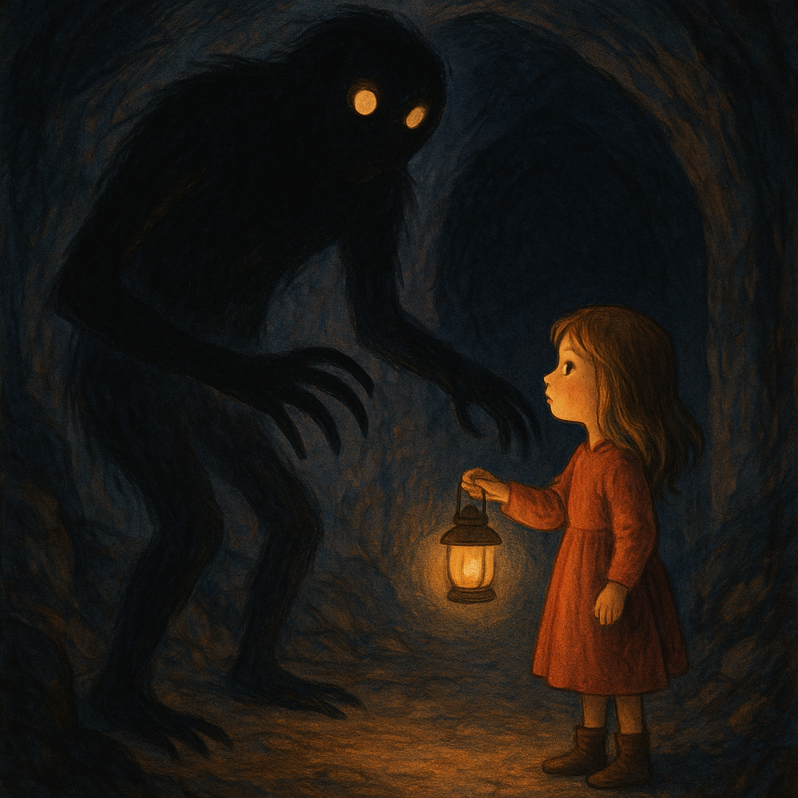
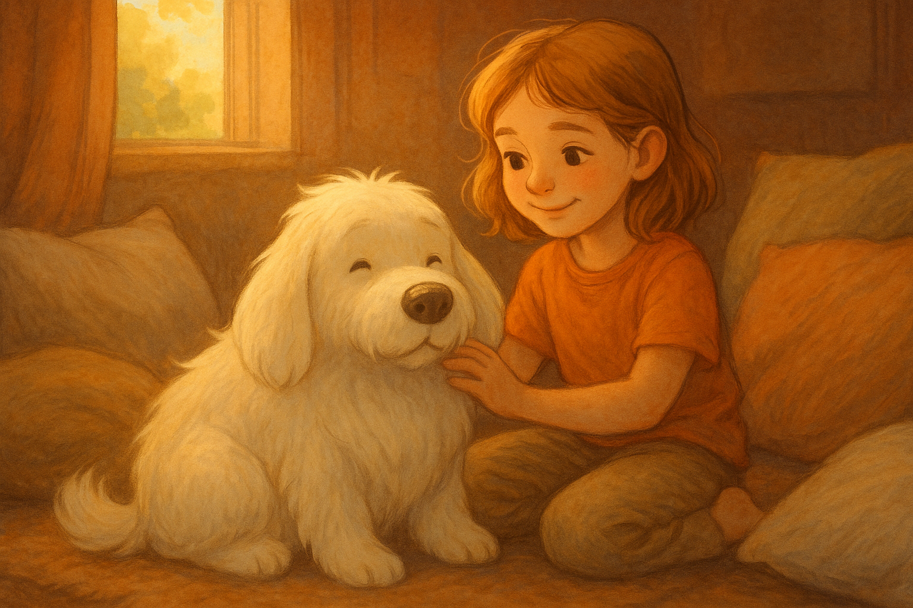
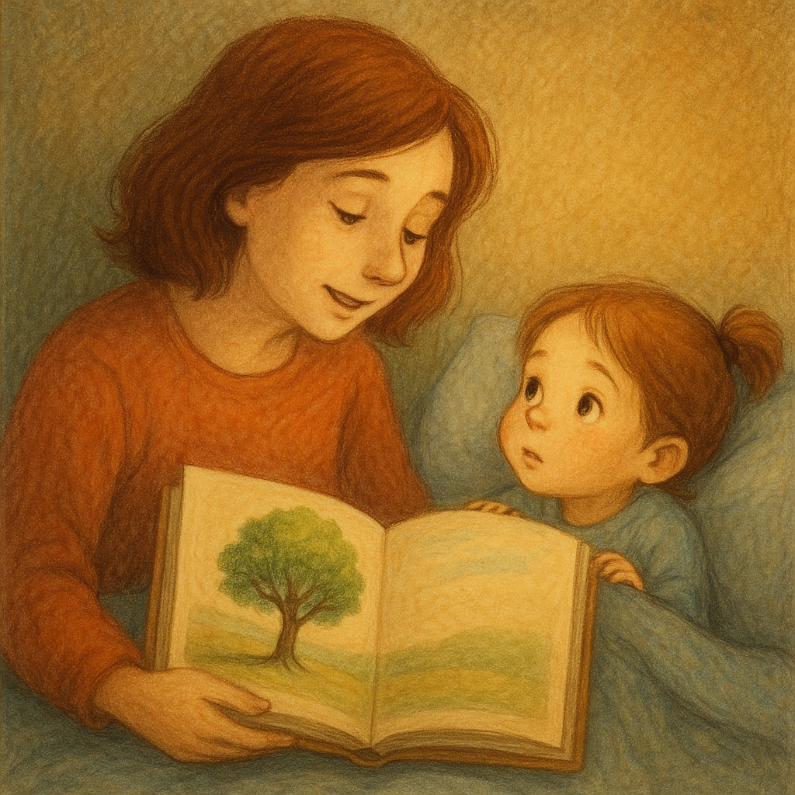
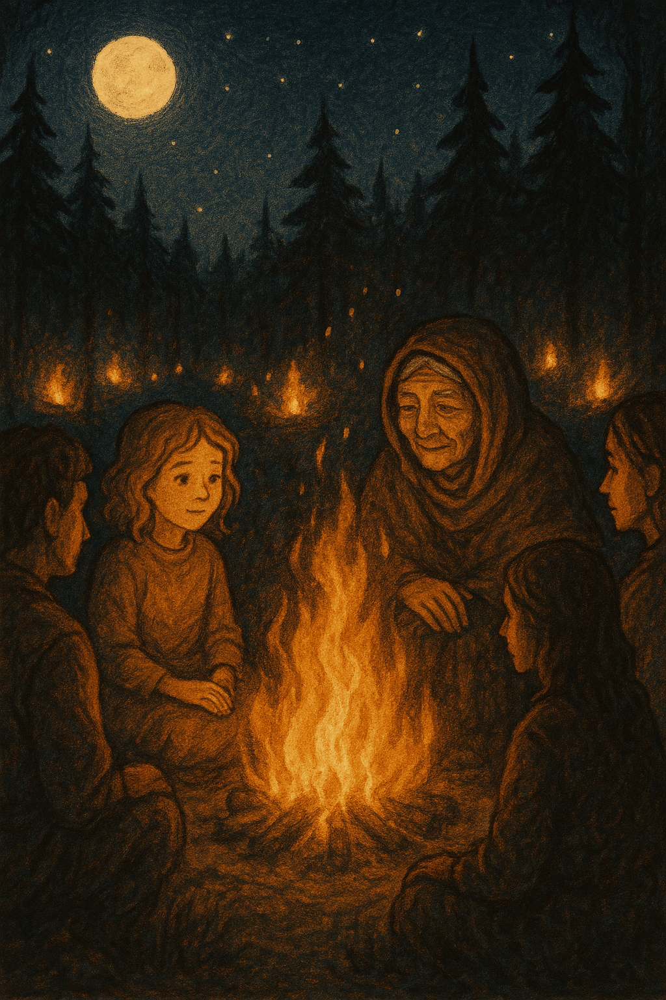

Авторские сказки, которые слышат твоё сердце
Меня зовут Ари.
Я создаю авторские сказки — мягкие истории, которые слушают и понимают твоё сердце.
Мои сказки — это не просто рассказы, а пространство для размышлений, вдохновения и внутреннего диалога.
Они не заменяют профессиональную терапию, но помогают найти тепло и опору в сложные моменты.
Если ты готова/готов услышать свою историю иначе — я рядом.
Формат: текст (PDF или сообщение), возможен аудиоформат. Оплата — по договорённости.
«Сказка про Варнаху — хранителя ночной шахты»
Глубоко под землёй жил Варнаха — большая Тень, страж порога между миром яви и миром снов. Днём он спал в шахте, а ночью встречал сновидцев, следя, чтобы никто не заблудился и не упал в темноту. Иногда Варнаха казался страшным: хватал за ноги, стаскивал одеяло, смотрел желтыми глазами во сне, и тогда люди просыпались напуганные. Но однажды смелая девочка, с которой Варнаха хотел стащить одеяло, села в кровати и сказала: — Я знаю, кто ты. Ты не злой, ты — просто тень. Я не боюсь тебя.
«Сказка про Тишу, Шум и дом, где все вместе»
В большом доме жил маленький дух по имени Тиша. Он был нежным и боялся громких звуков, ссор и злых слов. Когда в доме воцарялась тишина и ласковые слова, Тиша выходил и наполнял дом уютом. Но однажды в дом проник злой Шум — он прятался в углах, гремел, хлопал дверьми и пугал всех. Когда появлялся Шум, люди ссорились, а Тиша прятался и болел. Дом стал хрупким. Тогда жители собрались вместе — стали слушать друг друга, говорить спокойно и уважать чувства. Шум пытался им мешать, но люди были крепки и держались вместе. В конце концов Шум устал и ушёл навсегда.
«Сказка про Девочку и Волка (Из цикла про Луну)»
Жила-была девочка Луна — не трусливая и не смелая, просто обычная. Она любила слушать ветер и смотреть на звёзды. Однажды в лесу к ней вышел Волк. Он улыбался и просил помочь — лапа в капкане. Луна подошла, потому что ей сказали, что помогать — правильно. Но вдруг стало темно и страшно. Луна словно улетела высоко в небо и не могла кричать — тело замёрзло от страха. Волк ушёл, а Луна долго была одна, пыталась говорить с людьми, но слышала: — Почему не кричала? — Почему пошла в лес? — Ты сама виновата? Она молчала и старалась дышать. Потом Луна встретила старуху, которая сказала: — Если ты живая, ты не виновата. Старуха и Луна собирались у костра с другими, кто встретил Волка. Они говорили: — Ты не виноват. Ты не выбирал это. Ты выжил — значит, ты силён. И в том лесу, где был лишь Волк, теперь горели огоньки — костры надежды и силы.
«Притча о человеке с тикающим сердцем»
У человека было живое, тёплое сердце, полное света. Но однажды оно разбилось — сначала трещина, потом осколки боли. Он собирал их, плакал и злился, раня себя. От боли он стал злым. Появился Часовщик с новым сердцем — гладким, тикающим, без боли. — Это лучшее сердце, — сказал он. — Работает без сбоев. Человек принял его и стал спокойным, невозмутимым. Но и чувствовать перестал. Потихоньку начал случайно разбивать чужие сердца. Прошли годы. Он встретил кого-то, кто сказал: — У тебя не сердце, а часы. Настоящее ты отдал Часовщику, а он коллекционирует осколки и питает ими холод в мире. Человек захотел вернуть своё сердце, но боялся боли. — Вот варежки, — сказал собеседник. — В них не порежешься. Мы оставляем их друг другу, чтобы было легче брать своё обратно. Человек надел варежки и пошёл.
Напишите мне в Telegram. Мы вместе сформулируем запрос, и я напишу сказку специально для вас.
Написать Ари